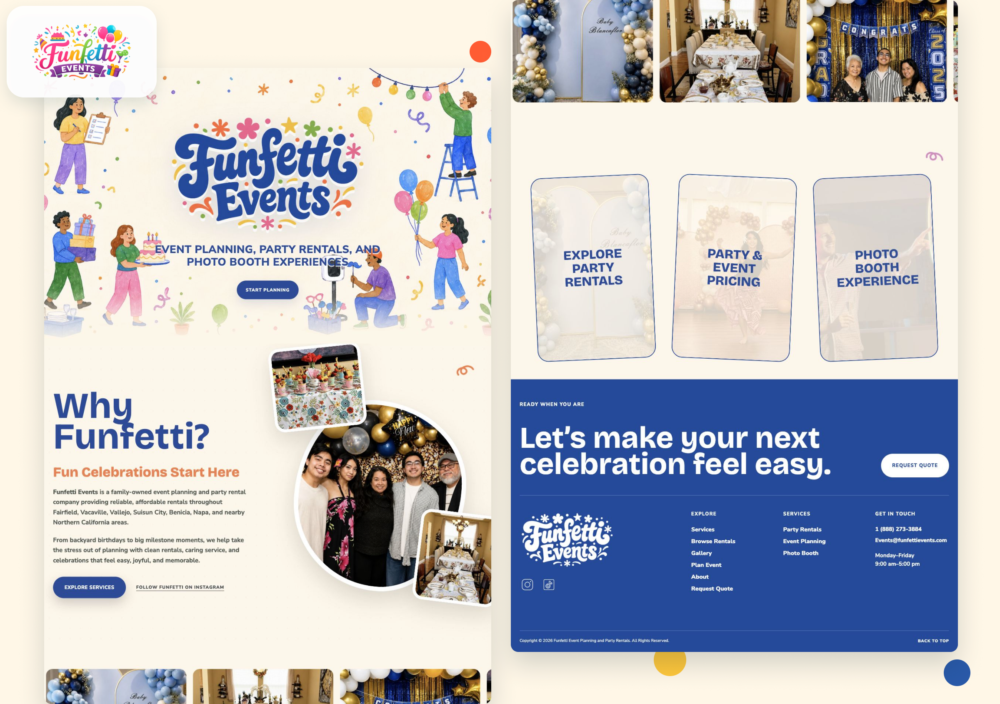
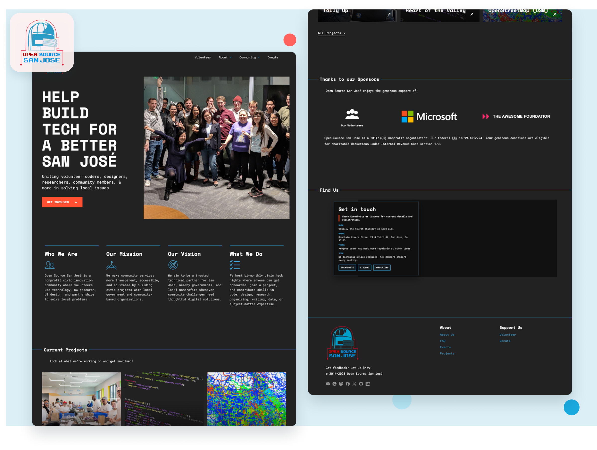
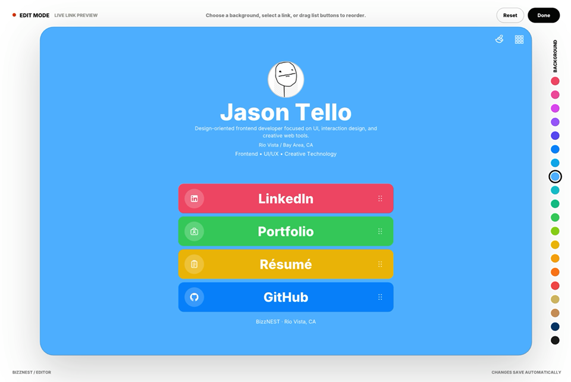

Jason Tello is a Bay Area product designer focused on thoughtful interaction and clear visual systems.
Available for new opportunities
·
LinkedIn
·
jasontello2003@gmail.com

Funfetti Events Website Redesign
UX/UI - Case Study
A party-rental redesign preview centered on service discovery, booking confidence, and a guided quote estimator.

Open Source San José Redesign
Civic Tech - Case Study
A civic-tech homepage concept with clearer project discovery, stronger mobile navigation, and a code-rain visual system.
RAINBOW
LAB
Rainbow Lab
Color Tool - Live Project
An experimental browser tool for building and testing square-based color palettes.
Ink Symbiote
WebGL - Interaction
A liquid ink field that reacts to pointer movement and touch.
 Hourglass Poster
Canvas - Motion Study
A one-minute study built around falling sand, grain, and shifting mass.
Hourglass Poster
Canvas - Motion Study
A one-minute study built around falling sand, grain, and shifting mass.

BizzNEST Personal Links Builder
Product UI · Design Assessment
A responsive personal-links builder with live customization, bento and list layouts, and reorderable content. I designed and built the interaction system, accessible states, motion, and responsive behavior across desktop and mobile.
John Tello Engineering Portfolio
Freelance UI/UX Design · Live Website
A responsive engineering portfolio that presents the client's career path, education, and professional identity through an interactive editorial experience.